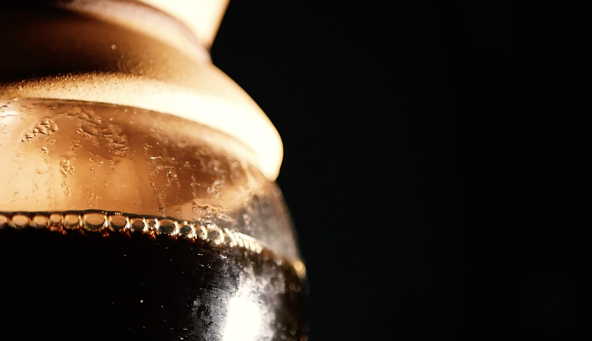
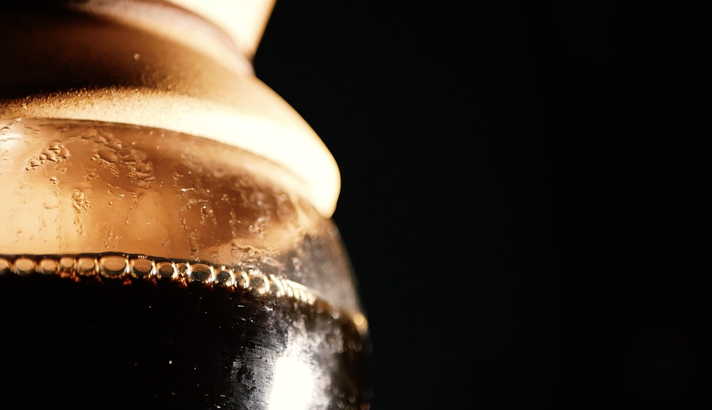
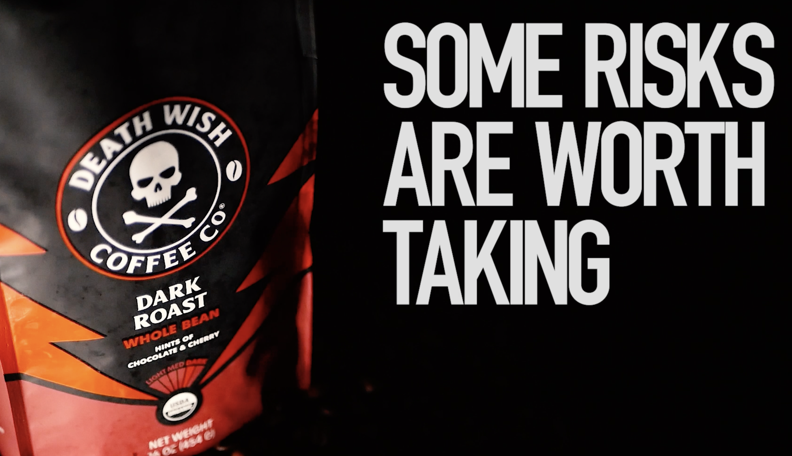
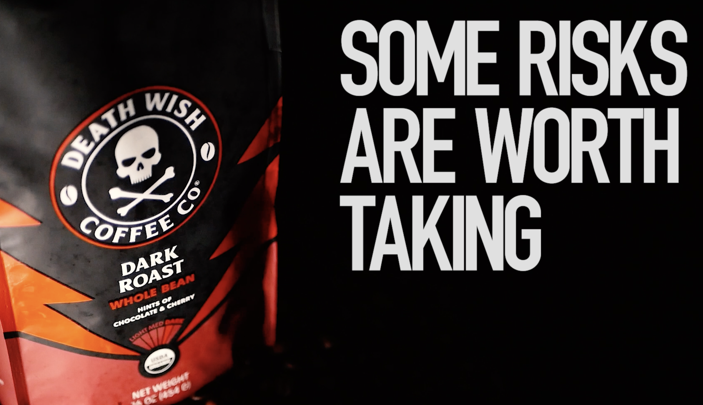
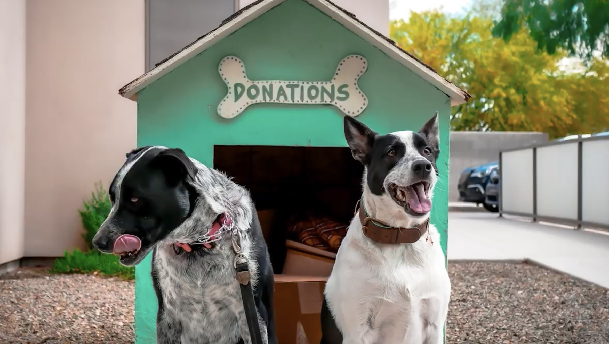
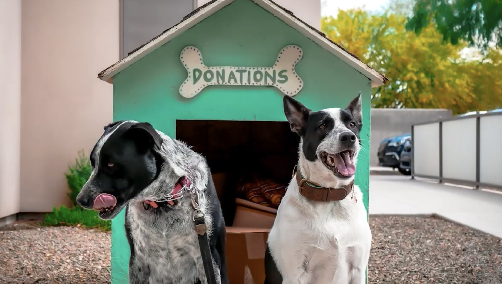

Shortform Film Concept for Coffee Brand
Project Stills

 

 

Objective
With social media marketing often limited by short advertisement lengths, the goal was to create a 30-second ad suitable for social media segments to boost customer engagement and conversion.
Synopsis
When creating this piece, I was influenced by the older, more dramatic anti-cigarette campaign commercials of the early 2000s. These ads often used dramatic close-ups and tight shots, typically ending with a simple text flash. I wanted to add a more comedic twist at the end to make the message land effectively.
Process
I set up the products from multiple angles while maintaining consistent cinematic lighting for each cut. I used both high-speed and slow-motion videography to increase drama. The footage was edited in Premiere Pro, with minor work in After Effects for the text flash at the end. Adobe Audition was used to finish the sound before completing the deliverables.
Results
The final 30-second ad effectively captures attention with dramatic visuals and a humorous twist. It was well-received, completed on time and within budget, and met the project's objectives.
Full video available at: youtube.com
 
